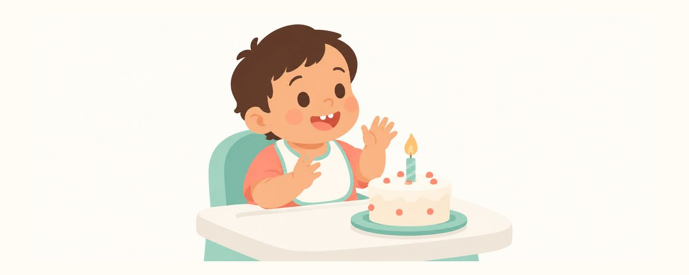

Erster Geburtstag: Check der Mundgesundheit
Der erste Geburtstag ist ein guter Anlass für einen Zahn-Check: Flasche abgewöhnen, zweimal täglich reiskorngroß putzen, Fluoridlack beginnen, Snacks und Nachtmahlzeiten.
Auf einen Blick
- Flasche abgewöhnen: spätestens mit 18 Monaten nur noch Becher
- Zweimal täglich putzen, morgens und abends, reiskorngroß
- Fluoridlack beim Zahnarzt, alle 3 bis 6 Monate
Alles Gute zum ersten Geburtstag! Um den ersten Geburtstag hat Ihr Kind schon mehrere Zähne, und beim Essen und Trinken wird es Ihnen immer ähnlicher. Damit kommen die Zähne auch öfter mit süßen Speisen und Getränken in Berührung. Die Gewohnheiten, die Sie jetzt aufbauen, prägen die Gesundheit aller 20 Milchzähne. Nutzen Sie den Geburtstag, um sie Punkt für Punkt zu prüfen.
Was sich um den ersten Geburtstag im Mund verändert
Um den ersten Geburtstag sind oben und unten mehrere Schneidezähne da, und bald kommen die ersten Backenzähne. Backenzähne haben Rillen auf der Kaufläche, in denen sich leicht Essen festsetzt. Beim Putzen braucht es deshalb mehr Sorgfalt als bei Schneidezähnen allein.
Auch das Essen verändert sich. Aus Brei wird Kleinkindkost, Snacks kommen hinzu, und es wandert öfter etwas in den Mund. Ob Karies entsteht, hängt weniger davon ab, wie viel Süßes gegessen wird, als davon, wie oft. Bei jedem Essen bilden die Bakterien im Mund Säure, und der Speichel braucht Zeit, um sie wegzuspülen und die Zähne zu erholen. Wird ständig zwischendurch gesnackt und getrunken, haben die Zähne keine Pause.
Auch Flasche und nächtliche Mahlzeiten sollten Sie jetzt noch einmal anschauen. Das Einschlafen mit der Flasche oder häufiges Trinken in der Nacht ist eine Hauptursache für Karies an den oberen Schneidezähnen.
Ab jetzt beginnt außerdem der Fluoridlack beim Zahnarzt. Dabei wird eine dünne Schicht Fluorid auf die Zahnoberfläche aufgetragen. Das macht die Zähne widerstandsfähiger und hilft, Karies vorzubeugen. Das Auftragen geht schnell und tut nicht weh.
So kümmern Sie sich um die Gewohnheiten zum ersten Geburtstag
- Flasche abgewöhnen. Ersetzen Sie zuerst die Flaschen am Tag durch einen Becher und stellen Sie spätestens mit 18 Monaten ganz auf den Becher um.
- Putzen Sie Ihrem Kind zweimal täglich, morgens und vor dem Schlafen, die Zähne. Am wichtigsten ist das Putzen vor dem Schlafen.
- Nehmen Sie Fluorid-Zahnpasta in Reiskorngröße. Auch wenn Ihr Kind noch nicht ausspucken kann, ist diese Menge in Ordnung.
- Beginnen Sie mit Fluoridlack beim Zahnarzt und lassen Sie ihn je nach Kariesrisiko alle 3 bis 6 Monate auftragen.
- Snacks gibt es nur zu festen Zeiten, und andere Getränke als Wasser nur zu den Mahlzeiten.
- Reduzieren Sie die nächtlichen Mahlzeiten nach und nach und reinigen Sie danach immer die Zähne.
In diesem Alter wehren sich viele Kinder gegen das Zähneputzen. Will Ihr Kind die Zahnbürste selbst halten, geben Sie ihm eine zweite. Während es mit seiner spielt, putzen Sie mit der anderen. So klappt es viel leichter. Legen Sie Ihr Kind auf Ihren Schoß, mit dem Kopf zu Ihrem Bauch hin. So sehen Sie gut in den Mund, und der Kopf liegt ruhig.
Auch jeden Tag die gleiche Uhrzeit und der gleiche Ablauf helfen. Singen Sie zum Beispiel ein kurzes Lied und putzen Sie, bis es zu Ende ist. Dann weiß Ihr Kind, wann es vorbei ist, und wehrt sich weniger.
Auch wenn Ihr Kind allein putzen will, müssen Sie noch nachputzen. In diesem Alter kaut es eher auf der Bürste herum oder reibt nur über die Schneidezähne, Backenzähne und der Bereich am Zahnfleisch bleiben ungeputzt. Lassen Sie es zuerst selbst probieren und sagen Sie dann: „Jetzt sind Mama oder Papa dran“, und putzen Sie nach.
Schauen Sie sich auch typische Fehler um den ersten Geburtstag an:
- Auch nach dem ersten Geburtstag Milch nur aus der Flasche geben
- Fruchtsaft oder süße Getränke wie Wasser in den Becher füllen und immer wieder anbieten
- Ihrem Kind jedes Mal einen Keks in die Hand geben, wenn es danach verlangt
Häufige Fragen
Tut Fluoridlack weh?
Nein. Er wird mit einem kleinen Pinsel auf die Zahnoberfläche gestrichen und ist schnell erledigt. Wann Ihr Kind danach essen und Zähne putzen darf, erklärt Ihnen die Zahnarztpraxis.
Darf mein Kind die Fluorid-Zahnpasta noch verschlucken?
Eine reiskorngroße Menge darf verschluckt werden. Wichtig ist, die Menge einzuhalten. Geben Sie die Zahnpasta selbst auf die Bürste und bewahren Sie die Tube außer Reichweite Ihres Kindes auf.
Wie oft am Tag sind Snacks in Ordnung?
Wichtiger als eine feste Anzahl sind feste Zeiten. Legen Sie Zeiten für Mahlzeiten und Snacks fest und geben Sie dazwischen nur Wasser.
Mein Kind hat erst wenige Zähne. Ist das in Ordnung?
Wann Zähne kommen, ist von Kind zu Kind sehr verschieden. Ist aber nach dem ersten Geburtstag noch kein einziger Zahn da, lassen Sie es in der Zahnarztpraxis ansehen.
Wann Sie zum Zahnarzt gehen sollten
- Der erste Zahnarztbesuch steht noch aus
- Nach dem ersten Geburtstag ist noch kein einziger Zahn da
- An einem Zahn zeigen sich Verfärbungen wie ein weißer Streifen oder ein brauner Fleck
- Das Zahnfleisch blutet immer wieder beim Putzen
- Sie möchten sich beraten lassen, wann Sie mit Fluoridlack beginnen sollten
Zur richtigen Zeit erinnert werden
Geben Sie in der App Zahnkalender das Geburtsdatum Ihres Kindes (oder den Geburtstermin) ein, und diese Artikel erreichen Sie als Erinnerung genau dann, wenn sie wichtig sind. Kostenlos, ohne Anmeldung.
Quellen
Die Informationen in dieser App dienen der allgemeinen Aufklärung und ersetzen keine professionelle zahnärztliche Betreuung. Bitte sprechen Sie mit einer Zahnärztin oder einem Zahnarzt über die Situation Ihres Kindes.